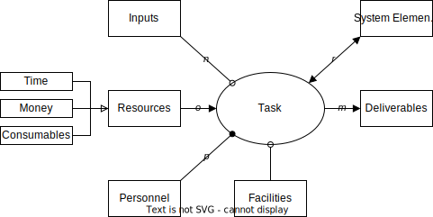
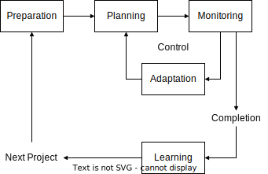

SPM Concepts#
Project#
Project = set of tasks that:
are related to each other
have a specific objective to be completed within certain specifications
have defined start and end dates
have funding limits
consume resources
Iron Triangle#
Project:
Constraints: Scope
Variables: Cost, Schedule
System#
System = set of physical/virtual objects whose interrelationships enable desired function(s).
More than the sum of its parts
Undesired (emergent) functions often exist
System complexity scales with the number of objects as well as the type and number of interconnections between them
Instantaneously available functions, versus “lifecycle” properties (scalability, flexibility, robustness, etc.)
Product = system sold for profit
Project Management (PM)#
Project Management (PM) = body of methods and tools that facilitate the achievement of project objectives
Within time
Within cost
Within scope
At the desired performance/specification level
While effectively and efficiently utilizing resources
While carefully managing risks and opportunities
Research & Development (R&D)#
Development |
Structured |
Planning |
Predictive |
|---|---|---|---|
Research/Technology |
False |
Hard |
False |
Product/System Development |
True |
Easy |
True |
Task as an Object-Process-Diagram#
 |
|---|
Task |
|
|---|
Project |

 |
|---|
SPM ESD.36 Framework |